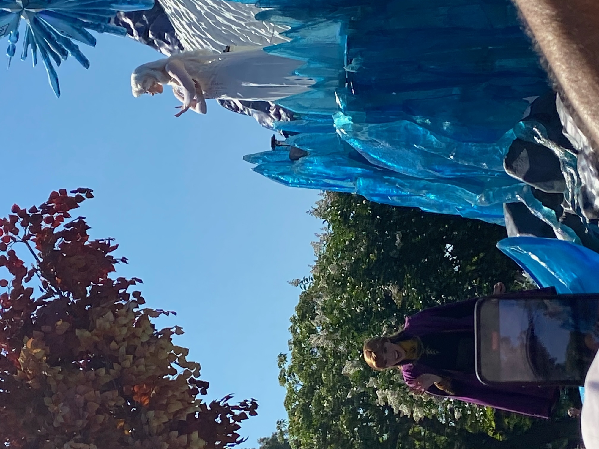
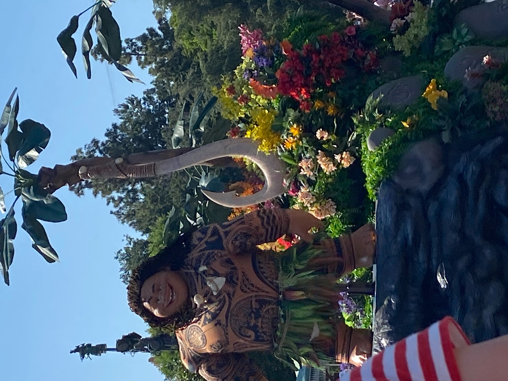
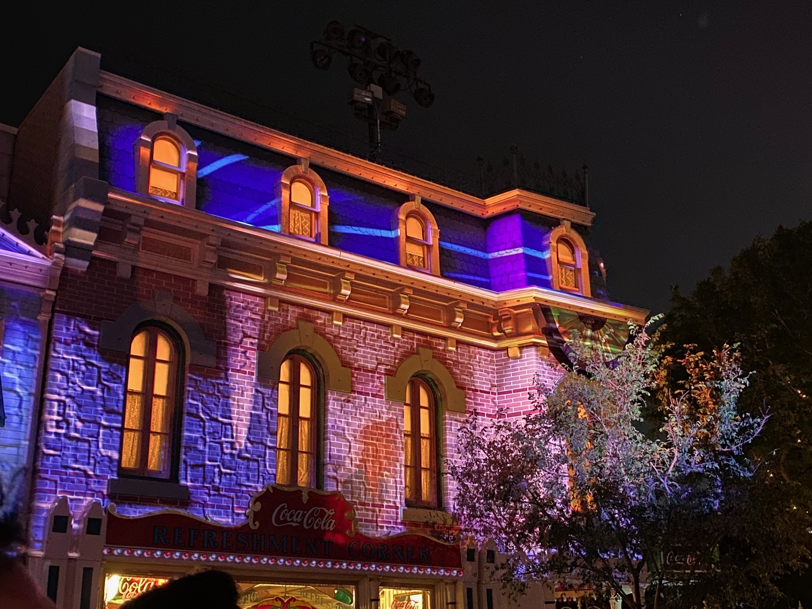
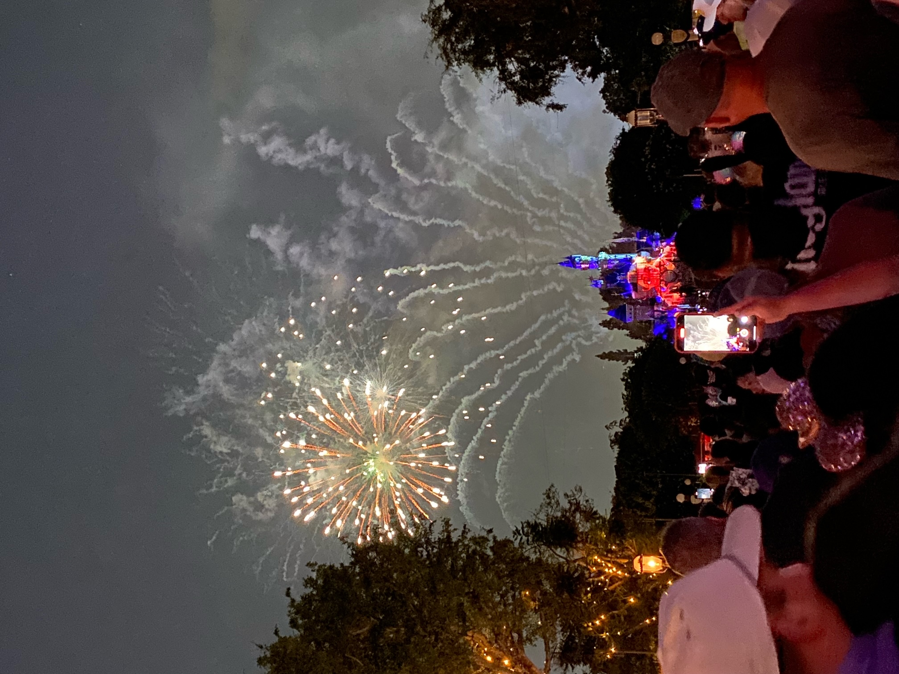

Alison and I were up early to buy some fuel and to restock the fridge. We chilled around the ranch in the morning, had an early lunch and drove to Disney.
We had an allocated time for shopping at Downtown Disney, so we split up to do our own shopping. Me and Jake bumped into each other in the Lego and Star Wars stores. There was lots of nice stuff. They were not afraid to charge.
We met in time to get into the park for the big day time parade. We were ushered by the staff to where we could watch and where you had to keep walking. The parade was great, as ever. We don’t know how they dance for 40 minutes in that heat, all while smiling.


As you should have expected, we had a plan. We aimed for the Matterhorn Bobs, which is a new ride for us, but first opened in the 1950s. We sat single file as the ride smoothly and quickly swished us round the Matterhorn, while a yeti jumped out at us a few times. Very nice ride, and some nice chat with a local in the queue (he went to Mexico for tequila and came back a wife).
Our main target for the day was the new Star Wars ride, Rise of the Resistance. Queue times can be 90 minutes, but right now it was 45 minutes so dashed as quick as is possible in this heat. We got off the ride about 45 minutes after joining the queue, but at least 10 minutes of that was the ride/experience. This is our new favourite ride.
The queue involved walking through an immaculately themed rebel base. We got into the nice pre-loading room then onto what we thought was a simulator ride where you stood up. That bit was ok, but then the door opened and we walked out onto an Imperial Star Destroyer (a bit like the start of Star Trek:The Experience in Vegas). Characters were all dressed in appropriate kit and there were 50 or so First Order troopers, that moved just enough to question whether there were people inside.
We then got lined up, taken into a chamber with a video cut scene, followed by an escape by the resistance cutting a hole into the wall to get us out. They put us in transports, which were like the trackless cars in Ratatouille. We then raced around the Star Destroyer, avoiding laser shots, driving under AT-ATs, feeling the force from Kylo Ren, dropping down and shooting up. It was beautifully themed and the story made sense, and every corner that you looked in felt like being on the Star Destroyer. What an amazing, long ride. Then the car drove into an escape pod and the ride became a motion simulator! It was like 5 or 6 rides in 1. Even the girls were impressed.
After tea, we split up with Jake undertaking missions using his phone and Magic Band around Galaxy’s Edge. The other 3 of us went on Indiana Jones, which was nothing like the Paris version. This was a big car going round a track while hydraulics in the car bounced and tilted you around, with creatures and Indy talking you round. The girls loved it. I thought it was just pretty good.
Jake joined us for Jungle Cruise (cringy jokes and questionable animatronics but the guide made the ride) and Big Thunder Mountain (in no way ‘orrnedous and better than expected).
Me and Jake went for a repeat ride of Rise of The Resistance (this time trying to understand how it all worked) while the girls shopped and got a spot for the fireworks show. They were part way down Main Street, which turned out to be the perfect spot. We joined them in good time.
The castle is so small that they also project onto the top floor of the Main Street shops, so we saw the story on the shops right next to us and saw the fireworks square on. Classic Disney spectacular stories, music and fireworks. This time with the added bonus of our Magic Bands vibrating with the big fireworks and matching the light colours. The big finale almost blinded us.


After the show, we went on the submarine ride, which was good, but the guide seemed as tired as we all felt. It was mainly video screens under water telling the story of Finding Nemo through submarine portholes. Next in our action-packed day was Jake riding a Story Book boat ride with a family while the other 3 of us watched an excellent Encanto projection onto Small World. The girls then rode it and Pirates while me and Jake walked around Galaxy’s Edge in the dark, which was even more impressive than in the day time. The boys watched some old cartoons and walked round a Walt museum area while we waited for the girls. Home and in bed just before 1am. Big day!